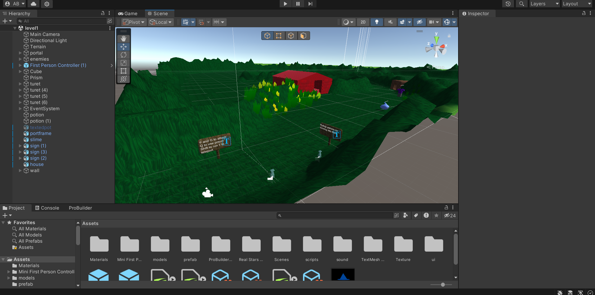
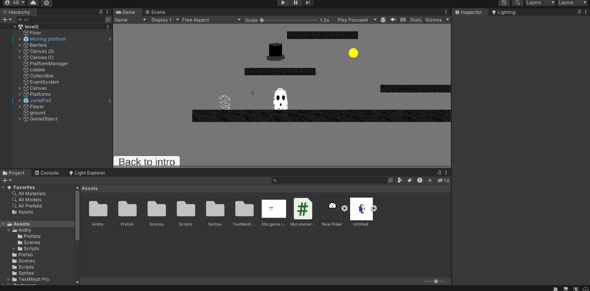

Hello I am a Games, Interactive Media, and Mobile major at Boise State University. I have made projects with Unity, Adobe Photoshop, Autodesk Maya, and web development projects.
The purpose of this website is to act as a portfolio of the projects made in GIMM.
Individual game project
The individual game project was a game that I had full creative control over and is the culmination of the skills I have so far learned in GIMM. What made the project fun was coming up with things to implement in the game.
Technologies and skills used for this project
Unity, C#, Krita, Autodesk Maya, Audacity
2d game project
I Made a 2D Platformer in unity. 2d images were made in photoshop. It was then later connected to an Arduino using Ardity to control the character
Technologies and skills used for this project
Unity, C#, Arduino, Ardity
Videos edited in Kdenlive
I have edited numerous videos in KdenLive for portfolios at the end of a project and 360 videos that were implemented in unity. What I Learned was how to use Kdenlive to edit videos.

Technologies and skills used for this project
Kdenlive, Audacity